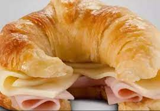
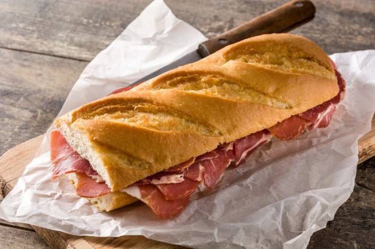
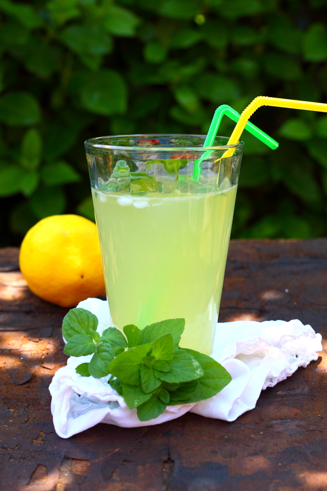

Coffee House
Pasteleria
-
MEDIALUNA
-
MEDIALUNA CON JAMÓN Y QUESO
-
MUFFIN DE MARACUYÁ Y CHOCOLATE NEGRO

-
MUFFIN DE BANANA Y DULCE DE LECHE
-
MUFFIN DE CHOCOLATE NEGRO, BLANCO Y JENGIBRE
-
CUADRADO DE COCO Y DULCE DE LECHE
Sandwiches
-
BAGUETÍN DE CRUDO
JAMÓN CRUDO, QUESO BRIE, RÚCULA, TOMATE CHERRY UNTADO EN MANTECA DE DIJON.
-
SMOKED
BAGEL, SALMON AHUMADO, QUESO CREMA CON CIBOULETTE,PALTA, RUCULA Y ALCAPARRAL.
-
POLLO TERIYAKI
PAN TRENZA DE CEBOLLA, POLLO LAQUEADO EN TERIYAKI Y SÉSAMO BLANCO, MAYONESA PICANTE, LECHUGA, TOMATE Y CEBOLLA MORADA.

-
BONDIOLA BBQ
PAN TRENZA DE CEBOLLA, BONDIOLA BASEADA EN COCCIÓN LENTA CON BBQ, CEBOLLAS CARAMELIZADAS, RUCULA Y COLESLAW.
-
LOMAZO
BAGUETÍN, LOMITO VUELTA Y VUELTA, CEBOLLAS CARAMELIZADAS, QUESO, LECHUGA, TOMATE Y HUEVO A LA PLANCHA.
-
ARGENTO
PAILLARD DE LOMO, CEBOLLAS CARAMELIZADAS, QUESO GRATINADO, RÚCULA Y MAYO DE CHIMICHURRI EN PAN DE MOLDE BLANCO.
Bebidas
-
JARRA DE POMELADA CON LIMA Y MENTA
-
JARRA DE LIMONADA CON MENTA Y JENGIBRE
-
JARRA DE LIMONADA CON MIEL Y MARACUYÁ
-
NEGRITO
KIWI Y DURAZNO DECORADO CON AZÚCAR NEGRA.
-
MIX DE FRUTAS
JUGO DE NARANJA, JUGO DE LIMÓN, MANGO Y MIEL.
-
LICUADOS CON LECHE O JUGO
FRUTILLA, DURAZNO, ANANÁ, MANZANA, KIWI, MELÓN O PERA.
